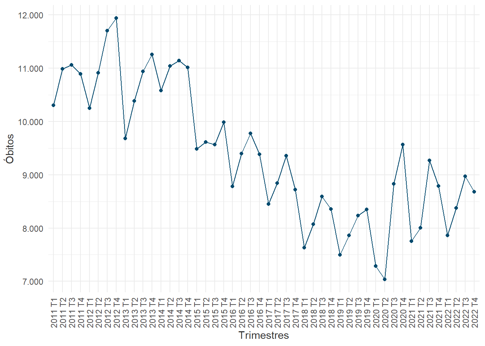
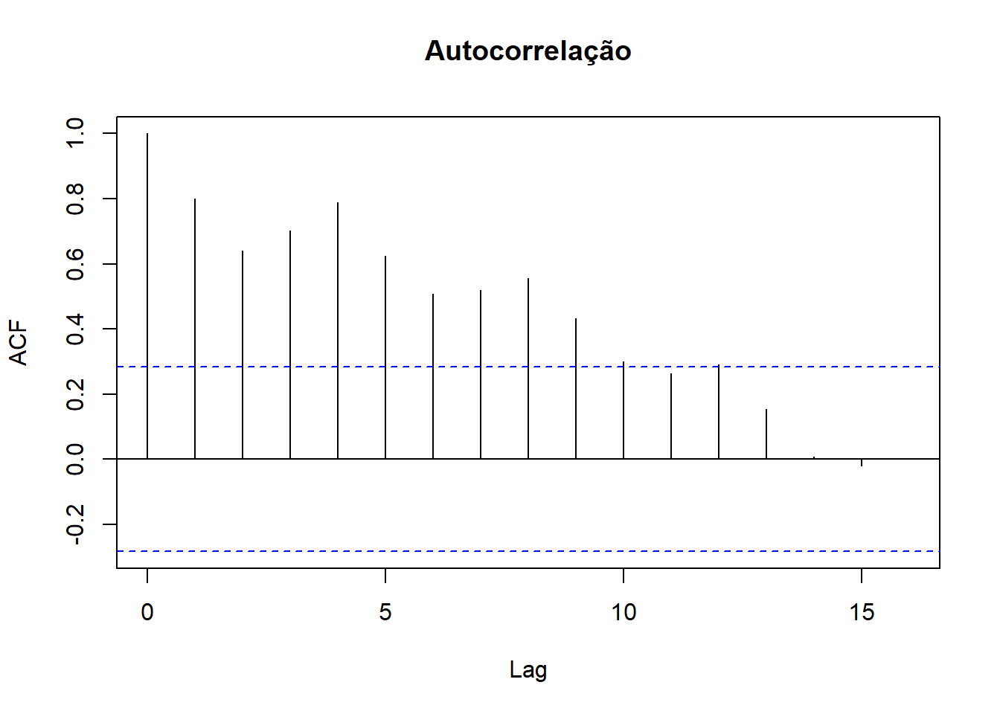
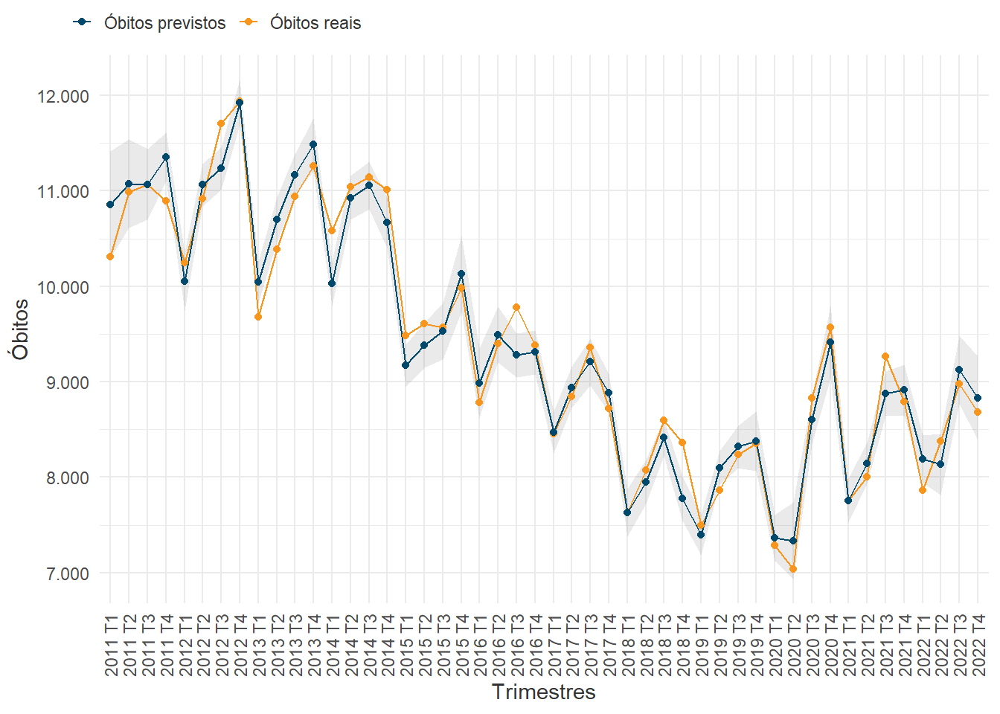
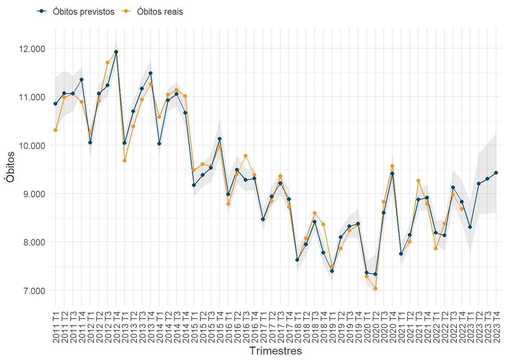
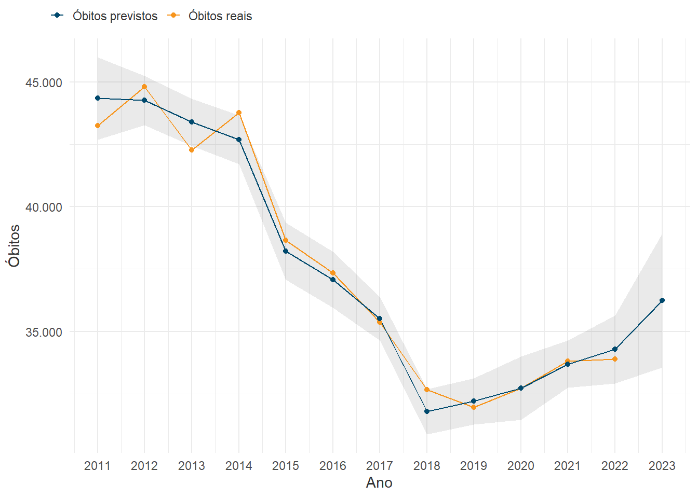
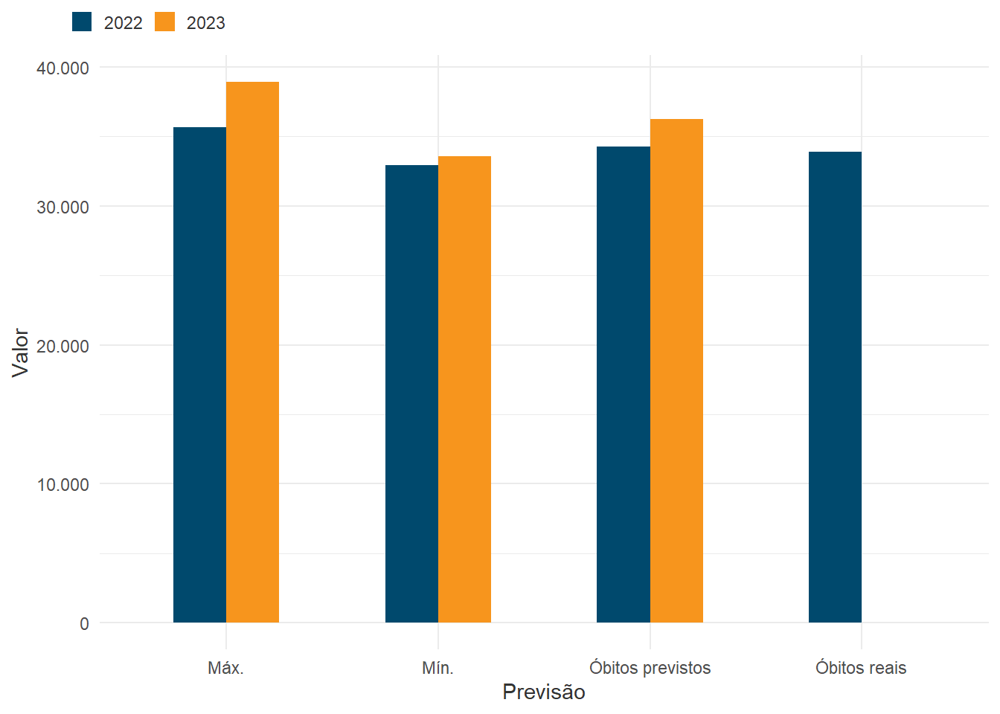

library(tidyverse)
library(tidymodels)
library(here)
library(fleetbr)
library(arrow)
library(roadtrafficdeaths)
library(onsvplot)
library(knitr)
library(kableExtra)Modelo Preditivo Trimestral de Mortes no Trânsito
Descrição
Modelo de âmbito nacional para a previsão de número de mortos em trânsito em resolução temporal trimestral. Este modelo é criado a partir de uma regressão linear multivariada com as variáveis:
- Frota (veículos totais, motocicletas e automóveis - RENAVAM);
- PIB (em dólar - Bacen);
- Acidentes totais, acidentes fatais e feridos em rodovias federais (PRF);
- Óbitos em trânsito (variável dependente - DataSUS).
Pacotes utilizados:
Dados
Os dados foram pré-processados e agrupados em trimestres utilizando a função lubridate::quarter() para a criação do dataset do modelo, como indica a tabela:
Como demonstram os gráficos de série temporal e autocorrelação, óbitos em trânsito possuem uma sazonalidade trimestral:


Modelagem
O modelo foi treinado com 75% dos dados, tendo seu desempenho avaliado com as funções de métricas rmse(), mae() e rsq():
| Métrica | Valor |
|---|---|
| RMSE | 306.28 |
| MAE | 244.44 |
| RSQ | 0.91 |
Previsões
Previsão de 2022


Previsão de 2023


Tabela de previsões
| Previsão | Valor | Ano |
|---|---|---|
| Óbitos reais | 33894 | 2022 |
| Óbitos previstos | 34278 | 2022 |
| Mín. | 32916 | 2022 |
| Máx. | 35639 | 2022 |
| Óbitos reais | - | 2023 |
| Óbitos previstos | 36241 | 2023 |
| Mín. | 33551 | 2023 |
| Máx. | 38932 | 2023 |
